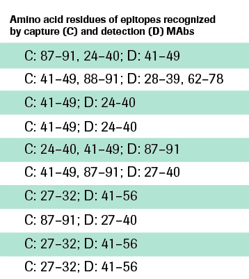

An I is not an I 7
Data Abridged.
The most recently FDA-approved assays.
All of the Troponin I assays that exist today, have different 99th percentiles, and also have different CVs.
- They are all measuring different epitopes.
The two Beckman assays have different 99th percentiles at a 20% CV and have the same epitopes.
- They have the same reagent on two different instruments, and it performs differently, and have different 99th percentiles.
What does that say about their reagent?
You can never say that a Siemens assay is comparable to another Siemens assay.
- Their 99th percentiles span from 0.04 ng/mL all the way up to 0.2 ng/mL and are measuring all different epitopes.